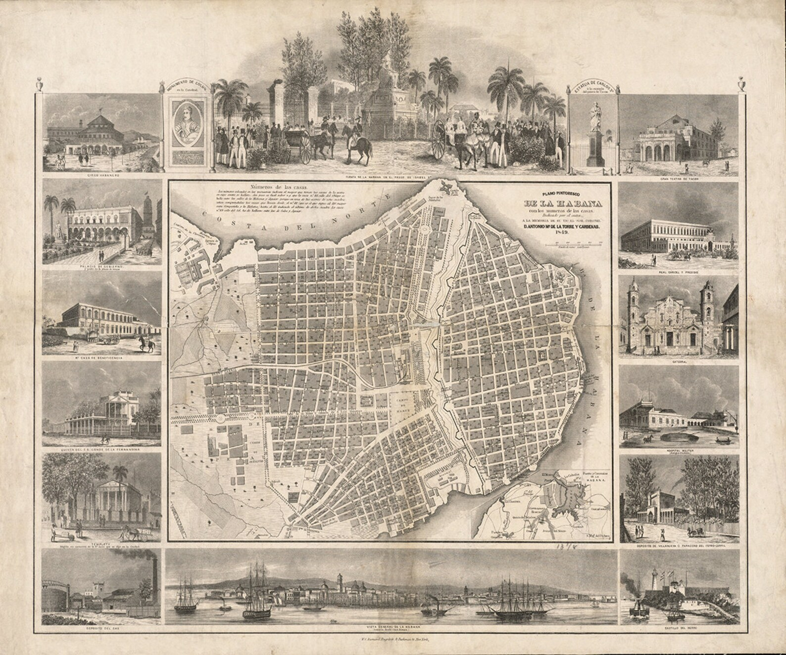
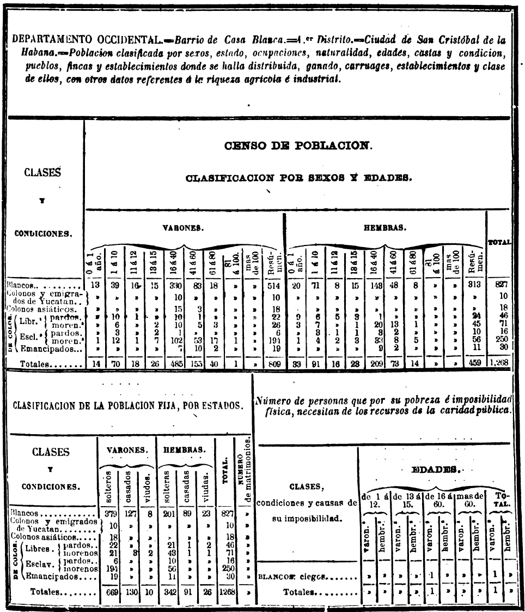
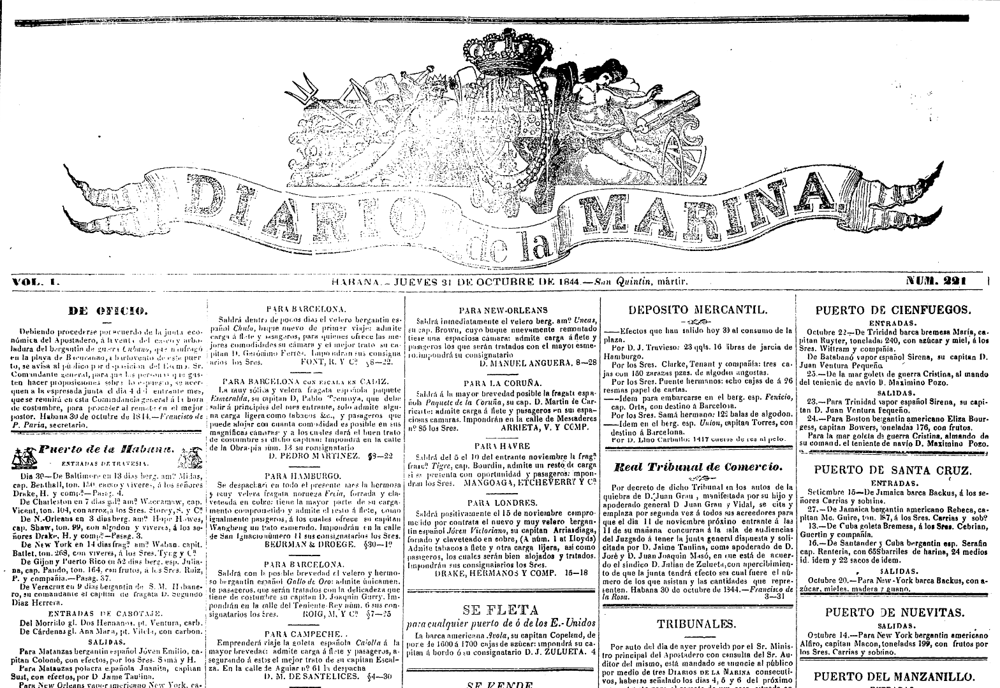

A late-ninteenth-century photograph of the Palacio de Aldama. Notice the street car tracks and overhead wires in the foreground.
On October 9, 1841, a group of at least fifty enslaved African laborers was at work at a construction site when they staged a rebellion. These workers were constructing the Palacio de Aldama, one of Havana’s most iconic neoclassical buildings, whose imposing Doric colonnade was designed by the Dominican-born architect Manuel José Carreras y Heredia and commissioned by the Basque entrepreneur and plantation owner, don Domingo de Aldama. Likely, they were working as masons, day laborers, carpenters, and in other building trades, but their status as enslaved artisans at the very center of the colonial capital challenges the predominant historical narrative that emphasizes slavery primarily as a rural phenomenon tied to the plantation. Carreras, like Julio Sagebien, who was also hired to design some of Cuba’s first railroads linking the rural sugar plantations to Havana’s ports in the 1840s, was part of a rising cadre of professionals whose projects would define Cuba’s rising bourgeoise (the sugar elite), who were dependent on slavery both on their plantations and urban construction sites. This project argues that the labor of constructing the built environment is crucial for understanding the peculiar form of industrialization that was beginning to take hold in Cuba.
This is not only because of its increasingly global status as a nexus of foreign capital, growing mechanization on plantations, and infrastructure connecting them to the cities and global trade routes. In fact, on the construction sites themselves, the struggles for liberation that characterize the nineteenth century in Cuba were intimately tied to the material realities of the building trades and their relationship to the growth of professions. Focusing on Havana, this project maps the laborers—enslaved and free—who were crucial in the construction of key buildings and infrastructure between approximately 1840 and 1860.
A 1839 map of Havana showing the historic walled city on the right and the expanded "ensanche" outside the walls on the left.
While historians of slavery often note that enslaved, free, and emancipated people of color (the term is from the era) commonly worked in construction and several mechanical and artistic trades, little detail beyond this has been analyzed as the basis for architectural or labor histories of nineteenth-century Cuba. Indeed, while neoclassicism in painting and the visual arts were known to counter the dominance of non-white Cubans in the eighteenth and early nineteenth centuries, little has been said about the complex intersection of class, race, and professionalization within the building trades. Add to this the fact that the numerous struggles for liberation in which the enslaved and freed people of color fought for their freedom throughout the century often figured prominent masons, carpenters, and other individuals who were relatively autonomous in the control of their craft and production, as compared to factory workers, for example. The uprising on the Palacio de Aldama construction site might be viewed as part of the larger Escalera Rebellion (1841-44) in which enslaved Africans and freed people of color (and some white allies) attempted to abolish slavery on the island.
Thus, through aggregating information about the individuals who comprised the building trades in the mid-nineteenth century and understanding their distribution in Havana’s growing urban core, the project argues that urbanization was much more than the top-down work of architects and engineers. The process of urbanization, which was the product of capital generated by the mechanized production of sugar, the value held and reproduced by a large population of enslaved Africans and their decedents, was produced through struggle and conflict. Architecture and infrastructure both express and obscure this conflict and this project will use a series of maps, visualizations, and annotated images to argue for and describe the nature of this conflict, who was involved, what their interests were, and how this ultimately affected the urban form of Havana.
This project uses three datasets to visualize building labor in nineteenth-century Havana. The first draws on a census produced during the US-led occupation after the 1898 Spanish-American War to show the growth of the country from 1775 to 1908. The second uses census information from 1863 to describe the population of each of the six districts of the capital. Within each district the dataset contains population information by race and class, including residents’ status as free, enslaved, or emancipated. In addition, this second set describes the population in each district by occupation providing the numbers of masons, carpenters, and architects, among many other trades. Finally, the third dataset is drawn from nineteenth-century Cuban newspapers in which advertisements for the sale of enslaved individuals, runaways, and other notices mention the name, owner or employer, trade, and location of individuals between the 1810s and 1860s, with most appearing in the 1840s. Thus, the three sets together describe the overall composition of the city, in a national context, while locating in urban space some of the individual laborers who were responsible for the construction and maintenance of the city.
Example chart from the 1863 statistical and geographic dictionary.
October 31, 1841 front page of Diario de la marina, a popular nineteenth-century paper that often featured the coming and going of ships and commerce on the front page and ads for runaway slaves and those for sale at auction. Some of these mention the skills and trades practiced by these individuals.
Primary Sources
Carrera y Heredia, Manuel José de. Informe jeneral presentado á la Junta Directiva del Ferro-carril de la Sabanilla: con el proyecto de prolongacion de su camino hasta Navajas, y el plan de entroncamiento con los ferrocarriles de la Habana y Cárdenas. Matanzas: Impr. de Gobrerno y Real Marina, 1846.
Pezuela, Jacobo de la. Diccionario geografico, estadístico, historico, de la isla de Cuba. First. Vol. 3. Impr. del estab. de Mellado, 1863.
Saco, José Antonio. Memoria sobre la vagancia en Cuba: fragmentos.Diferencias (Linkgua Ediciones). Barcelona: www.Linkgua.com, 2019.
Saco, José Antonio. Obras de don José Antonio Saco. Libreria americana y estrangera de R. Lockwood é hijo, 1853.
Valdés, Gerónimo. “Expediente reservado sobre un motín de negros en la propiedad de Domingo Aldama,” 1842 1841. ULTRAMAR, 8, Exp.10. Archivo Histórico Nacional. http://pares.mcu.es/ParesBusquedas20/catalogo/description/1333031.
Various Articles and Advertisements sourced from: “Caribbean Newspapers, 1718–1876.” Accessed March 9, 2023. https://infoweb-newsbank-com.ezproxy.princeton.edu/apps/readex/welcome?p=EANACN
Secondary Sources
Clarke, Linda. Building Capitalism: Historical Change and the Labour Process in the Production of Built Environment. Routledge Revivals. Oxon [England]: Routledge, 2011.
Ferrer, Ada. Cuba: An American History. London, England: Scribner, 2021.
Finch, Aisha K. Rethinking Slave Rebellion in Cuba: La Escalera and the Insurgencies of 1841-1844. Envisioning Cuba. Chapel Hill: The University of North Carolina Press, 2015. http://www.jstor.org/stable/10.5149/9781469622354_finch.
Fraginals, Manuel Moreno. El ingenio: el complejo económico social cubano del azúcar. Comisión Nacional Cubana de la UNESCO, 1964.
Llanes, Llilian. Apuntes para una historia sobre los constructores cubanos. Colección Arquitectura cubana. Ciudad de La Habana, Cuba: Editorial Letras Cubanas, 1985.
Lowe, Lisa. The Intimacies of Four Continents. Durham: Duke University Press, 2015. https://www.jstor.org/stable/10.2307/j.ctv11cw8zh.
Robinson, Cedric J. Black Marxism: The Making of the Black Radical Tradition. Third World Studies. London: Zed Press, 1983.
Venegas Fornias, Carlos. La urbanización de las murallas: dependencia y modernidad. La Habana, Cuba: Ed. Letras Cubanas, 1990.
Weiss, Joaquín E. La arquitectura colonial cubana: siglos XVI al XIX. Sevilla: Consejería de Obras Públicas y Transportes, 1996.
Zeuske, Michael. “Out of the Americas: Slave Traders and the Hidden Atlantic in the Nineteenth Century.” Atlantic Studies 15, no. 1 (January 2, 2018): 103–35. https://doi.org/10.1080/14788810.2017.1411705.